Riding on the ridge
By the time I woke up from a sound sleep, I had decided to take the northbound local route for today’s ride.
Even though the mustache man got up early as well; he just smoked in bed and watched me packing.
Which made feel uncomfortable, it was like that I was on display for viewing.
The first thing today was to finish the 20 KM ride to TianShui in the morning, which I was supposed to finish yesterday.
Along the way, I bought five pan-fry biscuits with the size of half of my face stuffed with pickled napa or julienned daikon,
one for 60 cents RMB. They tasted fine and money was not wasted.
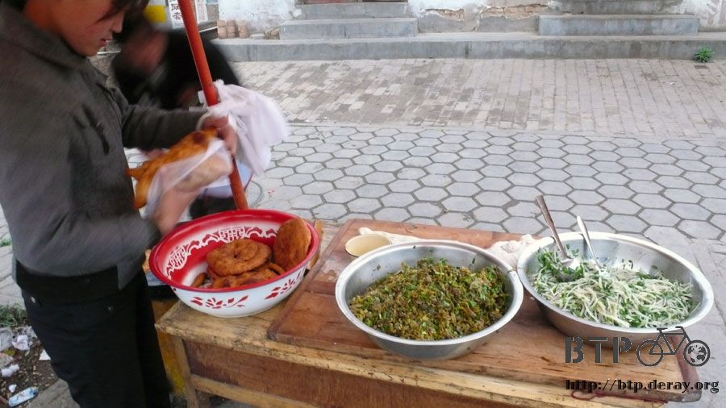
The hill climbing begun at north of TianShui, 1000m above sea level, and all the way up to 1600m above sea level.

I propped Dido against a roadside pole and took some pictures.
When I was thinking if a tripod needed for taking self-portrait,
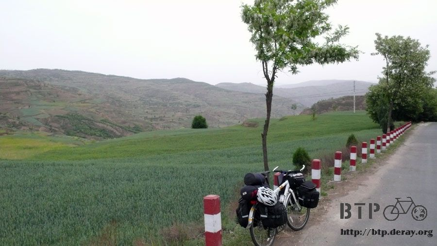
Dido slid a bit
NO” I shouted
By the time I grabbed the rear bags, it had detached from Dido.
My poor Dido and the front bags fell down to the wheat field, 3 meters below the roadway.
Oh! My God, Dido turned upside down. Was it damaged?
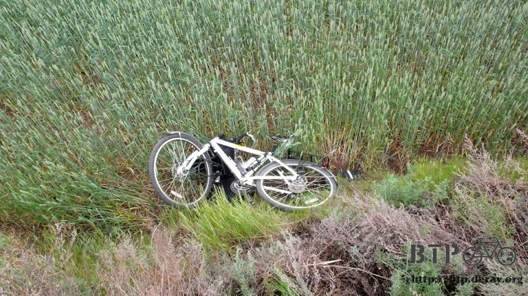
I carefully slid down to the wheat field, removed the front bags, and hauled Dido and myself back to the roadway.
“It will be nice if someone can give me a hand now” I was thinking
I slid down again for the front bags and ran back real quick.
Dido got dirt on it, no damage though. I apologized to Dido.
The front bags got dirt on them as well but I did not clean them well purposely.
It would be a blessing of disguise for me because I looked poorer with dirty bags.
When I re-attached the bags back on Dido, I promised that I won’t leave Dido more than 3 steps away when taking pictures.
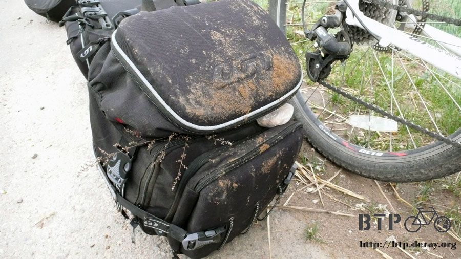
After climbing over the first hilltop, the second one had awaited me.
“How many hills do I have to climb today?” I thought
When I reached the second hilltop and was ready for a downhill ride, the road did not descend.
I rode up to a flat plateau of 1600m above sea level.
The ridge road on the plateau was above the terraced rice fields on both sides, and the far-away mountains were in cloud and mist.
I enjoyed the breathtaking scenery along the ridge!
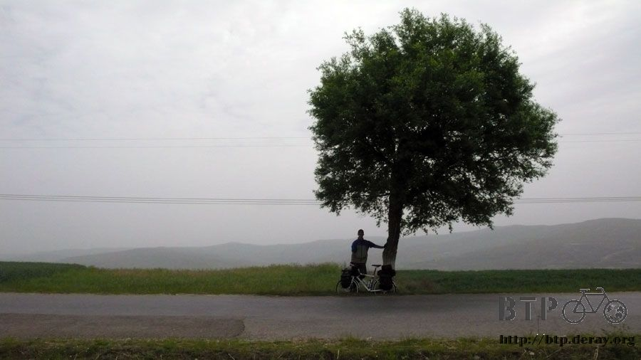
As a biker, my hard work was rewarded with the spectacular scenery
It was pretty cool in mountains, probably 16 ~ 18 degree Celsius.
With the strong crosswind from my right, 130 kg (Dido, me and bags) did not matter. I still rode unsteadily from side to side.
If we fell off of the ridge, it could be very nasty and worse than Dido’s previous fall.
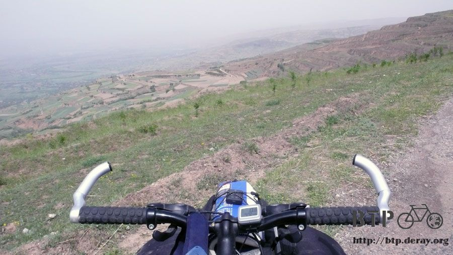
On the ridge, flying bugs disappeared, instead, wingless insects such as centipede and caterpillar appeared.
Not sure why they made the effort to cross the road, I did not want Dido to run over the harmless bugs, so I avoided them.
The ridge road was flat. Without up and down, the ride was quite easy.
It was a right decision not to take busy main roads but local roads. Moreover, the road condition was not as bad as I thought.
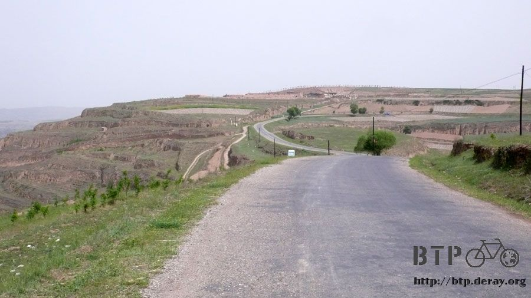
I had my lunch at a little town named YunShan in mountains where many houses were made with mudbrick and roof tiles.
I ordered braised noodle in a restaurant, then went to get a drink on street.
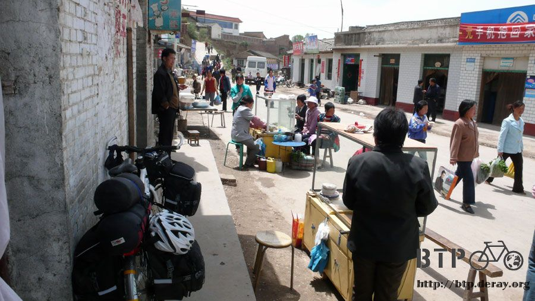
Juice cups, one for 50 cents RMB, out of curiosity, I bought two cups.
The first taste reminded me of childhood. It tasted just like the cheap juice tubes sold at the front gates of grade schools.
The juice tub was simply sugar water with drops of food color in a plastic tube, one for one NT. As a child I loved the juice tube.
The memorable food probably can not be found in Taiwan anymore. Surprisingly, they were sold here, a little town in China.
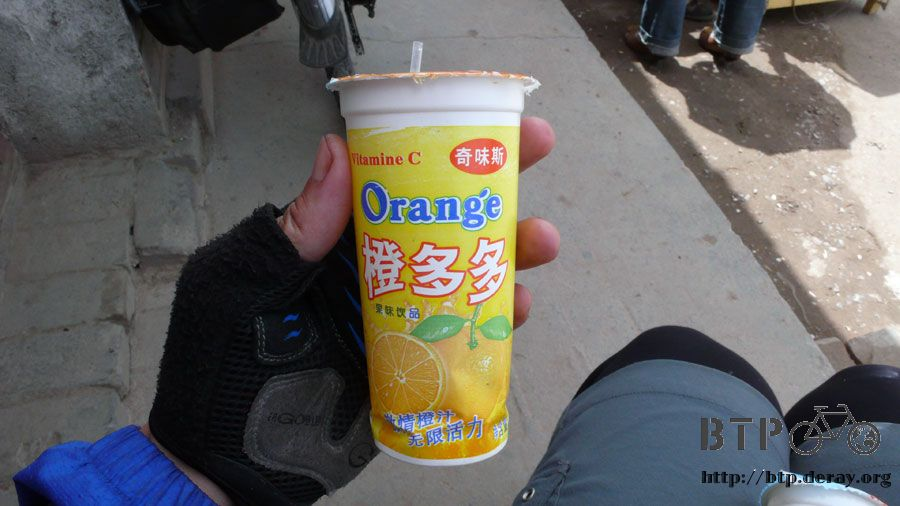
I loaded up on snacks, one kg of hardtracks for four RMB, 20 bags of mini crackers for two RMB.
Then, my noodle was served. I accompanied Dido and enjoyed the noodle at the front door of the restaurant.
Meanwhile, the granddaughter of a cold noodle stand owner came back home with two test papers, scored 100 and 99, in her hand.
People here spoke dialect; therefore, I could not understand their conversation.
School system here teaches both dialect and Mandarin, and focuses on dialect. Promoting dialect is a good thing.
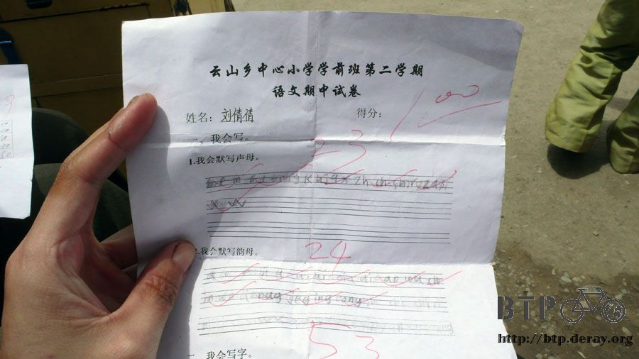
I took a nap after lunch then set off at 1:00PM
It was very quiet in mountains, farmers’ tractors or commuter buses passed by occasionally.
Most of the time, I was the only person riding on the road,
if I stopped, the world became silent, the earth seemed to stop rotating, and everything turned into a picture.
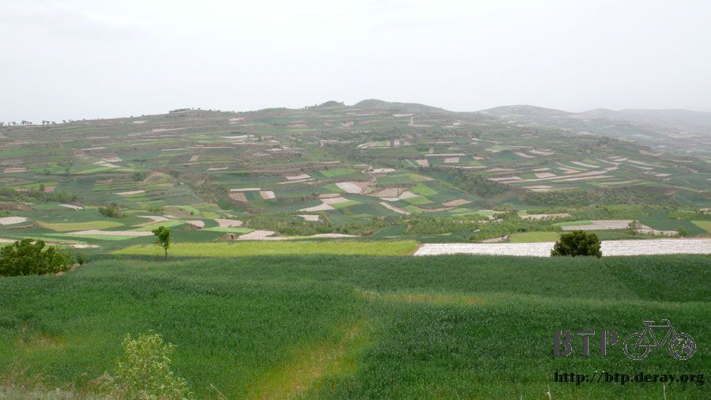
After riding on the ridge road for another 20 KM, I started descending a steep slope into my first stop, Qingjiazhuang.
I bought an ice pop, confirmed the direction, and then set off - a real quick stop.
I could not adjust myself from serenity to uproar and wanted to go back to mountains eagerly.
For the next stop, I was told that the roads were in high mountains behind my back and I probably won’t make it there today by bicycle.
A young man on his red motorcycle showed me another road.
Even though the alternative was easier, it was still an uphill ride.
Bikes were allowed on this highway-like road which went to TianShui as well.
I could have taken this road this morning instead, and did not have to climb hard in mountains.
In a way, this road was as boring as other major main roads, trucks roared on the road, and nothing to enjoy.
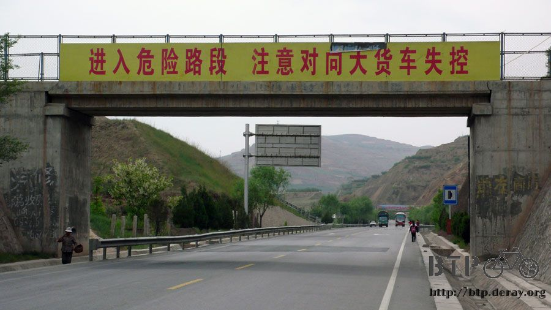
I spent 3 hours climbing the 25 KM uphill with 600m elevation gain.
I can easily finish 25K within one hour on a flat road.
I started worrying if I could make it to the next stop before sunset, otherwise, I would have to ride in the dark.
A truck check point was on the high point of the road.
As long as I quietly walk through the check point, policemen usually did not stop me.
This time, the policeman waved his hand and stopped me. Not sure what happened,
I was about to show my “Taiwanese ID for China”. The policeman simply felt for me,
helping me fill my bottles and letting me rest for a while after the strenuous climbing.
Alright, no trouble, I took a photo of the policeman as a souvenir.
In China, GonAn (public safety) has been renamed to policeman.
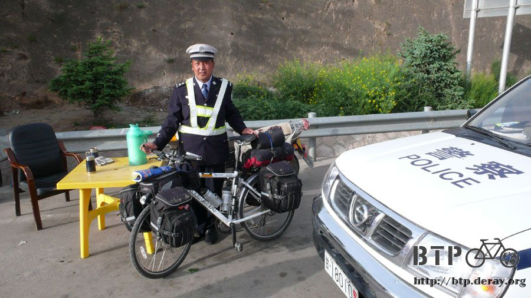
The condition seemed better after passing the check point, more flat roads and downhills.
However, when I descended to 1500m above sea level with 100m elevation loss, the downhill ended.
I continued on climbing again. Hopefully, the sun could work overtime for me today.
At 8:00pm sharp, TongWei was finally in sight. When I got off the road, the sun went down.
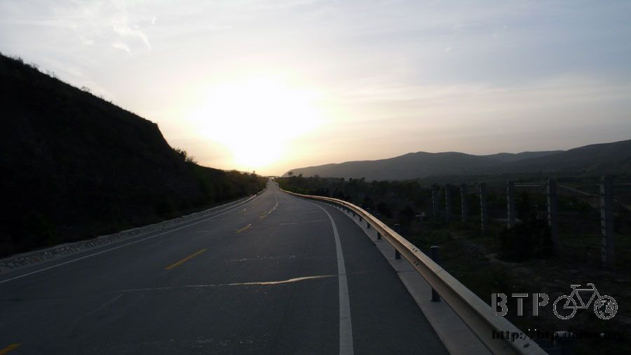
I found a hostel with room rate 10 RMB for one night. Rooms were sold out except for a double bed room where a journalist had checked in.
I took the room and had the hostel clerk watch Dido and bags for me while I left for dinner.
My dinner were twice cooked pork, noodle, and egg soup, half way through dinner,
I started feeling stomach upset, dizzy and nausea.
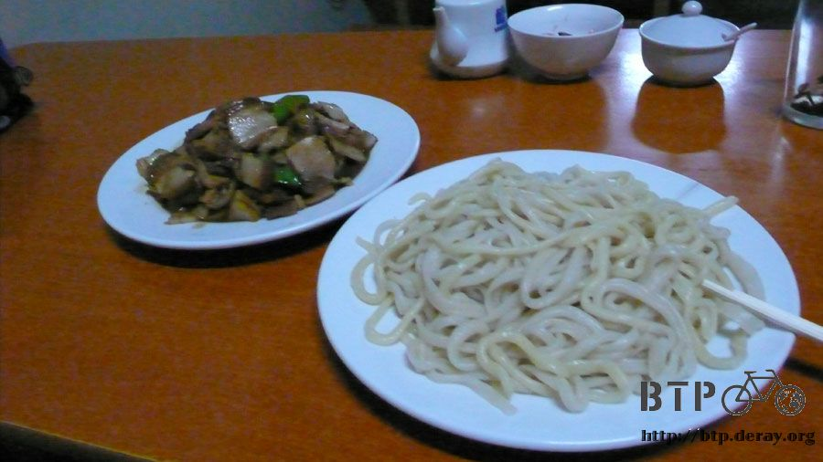
I felt that if I kept eating I would be in danger of losing my life.
I stopped and paid the bill. When I left the restaurant, I walked like a drunk.
The hostel was only 100 meters away from the restaurant.
I had to sit down and rest for five minutes halfway before walking back to the hostel.
The possible causes of my sickness were cheap juices at noon, exhaustion from over-biking,
having too much wind in mountains, venomous bugs, or food poisoning
The young hostel owner, a new father, was very nice to me because he had seen many bikers like me traveling to XinJiang.
When he saw I looked pale, walked wobbly, and held my belly, he asked what happened,
I said I had stomach upset, felt cold, and seemed to have food poisoning.
He gave me a bag of brown sugar to make hot brown sugar water,
which should warm up my stomach. I doubted it at first, however, after drinking a big glass of hot brown sugar water, I did feel better.
It was insane to overdo myself for 150 KM strenuous riding in mountains.
If possible, I really wanted to sleep through the entire day to fully recover from exhaustion.
p.s. did not take a shower back to back (evil smile)